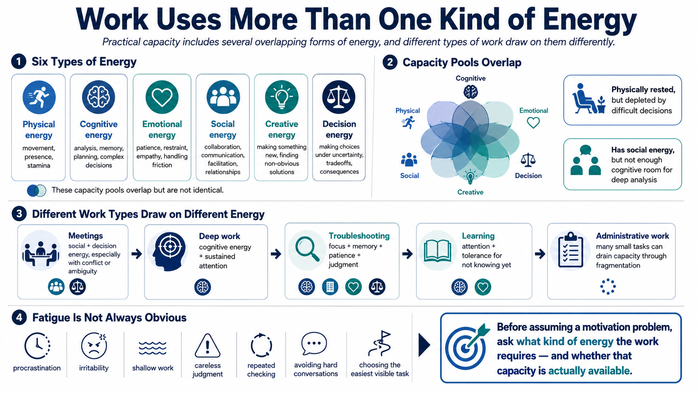

Types of Energy in Real Work
Connecting to LMS... Progress: in progress

Narration
Real work draws on more than one kind of energy. Physical energy supports movement, presence, and basic stamina. Cognitive energy supports analysis, memory, planning, and complex decision-making. Emotional energy supports patience, restraint, empathy, and the ability to handle friction without escalating it. Social energy supports collaboration, communication, facilitation, and relationship maintenance.
Creative energy is the capacity to make something new or solve a problem from an angle that is not obvious yet. Decision energy supports choices when the answer is uncertain, tradeoffs are real, and consequences matter. These capacity pools overlap, but they are not identical. A person may be physically rested and still depleted from difficult decisions. Another person may have social energy but not enough cognitive room for deep analysis.
Different work types create different demands. Meetings draw on social and decision energy, especially if they involve conflict or ambiguity. Deep work draws heavily on cognitive energy and sustained attention. Troubleshooting combines focus, memory, patience, and judgment. Learning requires attention and enough humility to tolerate not knowing yet. Administrative work may seem small, but constant small tasks can still drain capacity through fragmentation.
Fatigue does not always announce itself directly. It can show up as procrastination, irritability, shallow work, careless judgment, repeated checking, avoidance of hard conversations, or a tendency to choose the easiest visible task. Before assuming a motivation problem, it is worth asking what kind of energy the work requires and whether that kind of capacity is actually available.